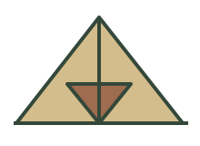
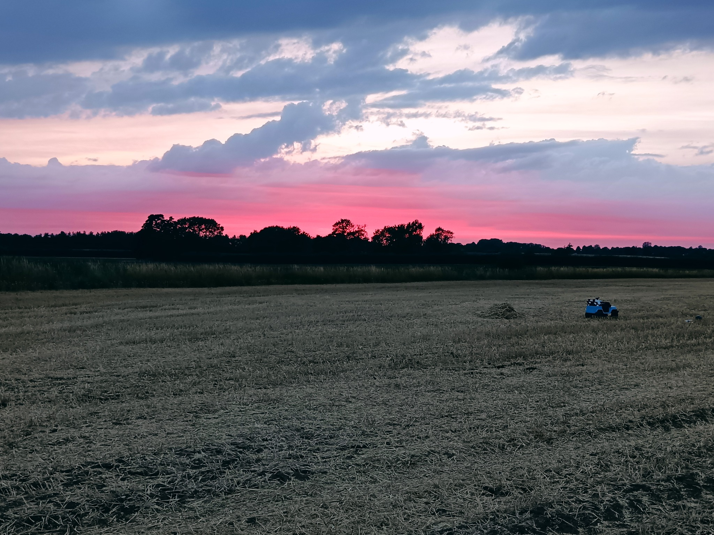
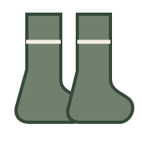
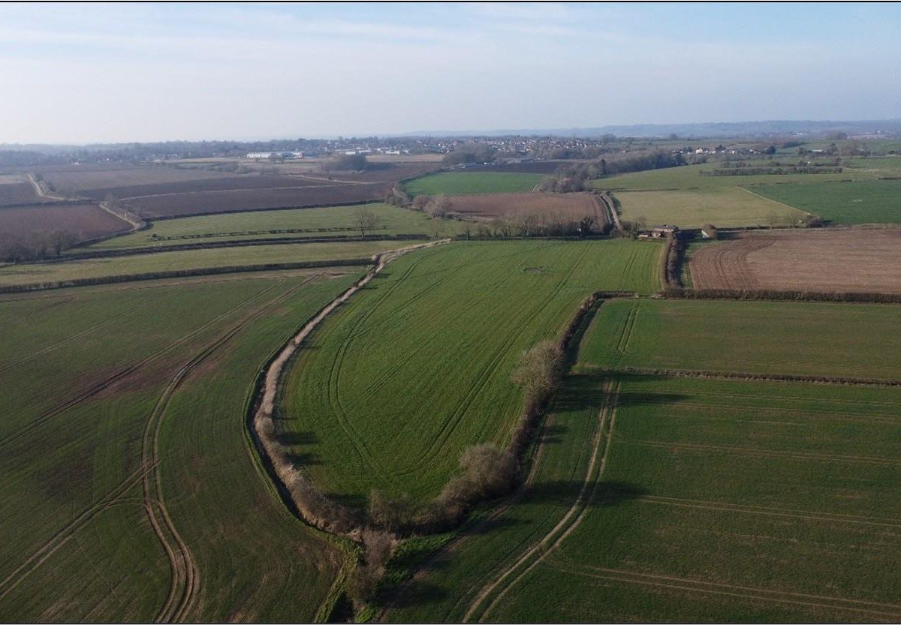
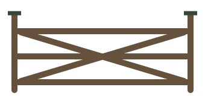
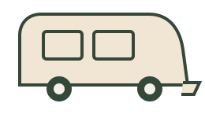
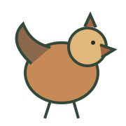
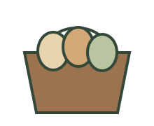

Grass Tent Pitch
Spacious grass pitches with countryside views.
- Up to 6 people
- Dogs included
- Awnings & pup tents included
From £10per night
View & Book →

A family-run campsite and smallholding built with nature in mind. Space to breathe, explore and make memories — for everyone.


Not just somewhere to park up and disappear behind a caravan door. The Camp Inn is being created as a relaxed countryside community: plenty of space, animals to meet, good food, muddy boots and evenings that last until the light goes.
No-faff pricing. Up to six people included, with dogs, awnings and pup tents included where permitted.


Whether it’s a tent, a tourer or something a little more luxurious, we’ve got the patch for you.
Spacious grass pitches with countryside views.


Grass pitches with 16A electric hook-up.

All the comforts you need for a relaxing stay.

A cosy countryside escape made for two.
Meet the animals, explore the smallholding and make the sort of memories that stick.




Our smallholding isn't just something to look at. As it develops, we plan to use and sell fresh farm produce too — including eggs from our own hens and seasonal produce grown here.
Local, seasonal & properly connected to the place you're staying. ♡

Low-impact solar and renewable power.
Careful water use and filtration.
Practical, lower-impact solutions.
Protecting the countryside we love.
Clean, comfortable and practical, but still with a little Camp Inn character. Our plans include individual toilets and showers, a dedicated family bathroom, plus The Camp Inn café & bar.
These are vision images for facilities currently being created ahead of opening.

We're building The Camp Inn from the ground up. Follow the progress, meet the animals and plan your first stay.
Plan your stay →